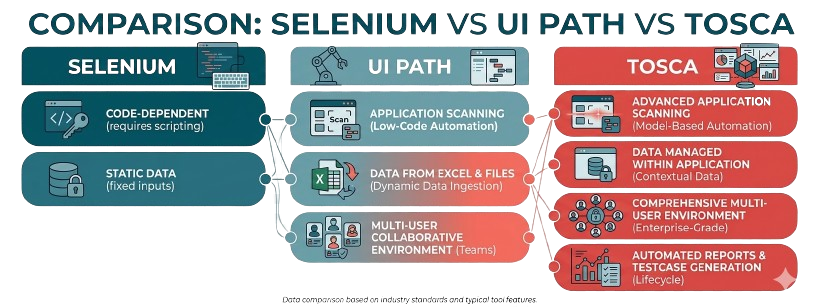
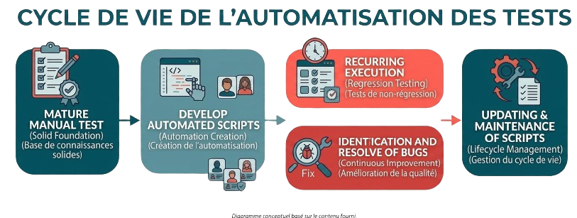

Quality and compliance at every stage of the data cycle
Eliminate repetitive manual work and empower your team with scripts that:

Official partner of Tricentis
Proven expertise with years of hands-on experience
Industry-leading platform trusted by global enterprises
Enterprise-grade, premium solution
Empower both testers and business users
Seamless integration with CI/CD pipelines
Scalable for complex, enterprise environments
Strong support, training, and ecosystem
